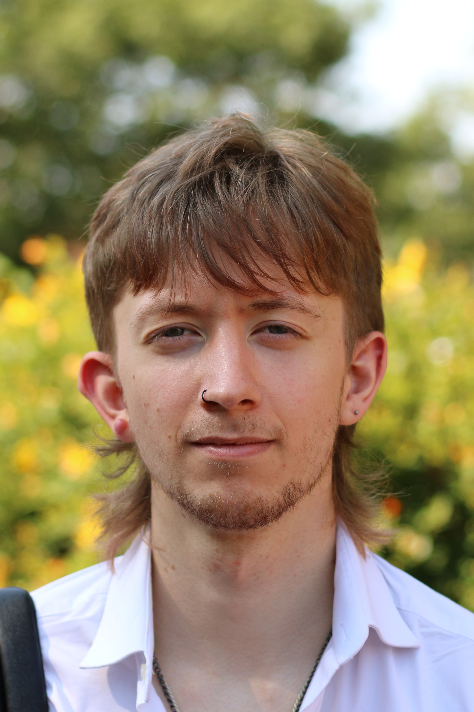

Andrew Tarzia is an Assistant Professor of Computational Chemistry for Synthesis & Materials within the School of Chemistry. He is a new PI and building the Tarzia Research Group. He has previously worked in Australia (undergraduate and PhD.), the UK and Italy.

Thomas Greenwood completed his MSci at the University of Birmingham in Physics and Astrophysics in 2025. Here, he searched for signs of extraterrestrial technology linked to period stellar phenomena. Tom has joined the group for his PhD, investigating the design of supramolecular hosts for the capture and neutralization of chemical warfare agents, co-supervised by Dr Adam Michalchuk.